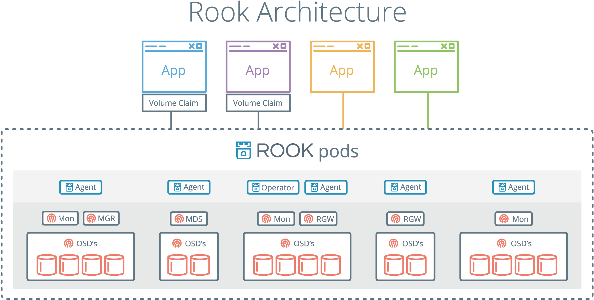

- 00 为什么我们要学习 Kubernetes 技术.md.html
- 01 重新认识 Kubernetes 的核心组件.md.html
- 02 深入理解 Kubernets 的编排对象.md.html
- 03 DevOps 场景下落地 K8s 的困难分析.md.html
- 04 微服务应用场景下落地 K8s 的困难分析.md.html
- 05 解决 K8s 落地难题的方法论提炼.md.html
- 06 练习篇：K8s 核心实践知识掌握.md.html
- 07 容器引擎 containerd 落地实践.md.html
- 08 K8s 集群安装工具 kubeadm 的落地实践.md.html
- 09 南北向流量组件 IPVS 的落地实践.md.html
- 10 东西向流量组件 Calico 的落地实践.md.html
- 11 服务发现 DNS 的落地实践.md.html
- 12 练习篇：K8s 集群配置测验.md.html
- 13 理解对方暴露服务的对象 Ingress 和 Service.md.html
- 14 应用网关 OpenResty 对接 K8s 实践.md.html
- 15 Service 层引流技术实践.md.html
- 16 Cilium 容器网络的落地实践.md.html
- 17 应用流量的优雅无损切换实践.md.html
- 18 练习篇：应用流量无损切换技术测验.md.html
- 19 使用 Rook 构建生产可用存储环境实践.md.html
- 20 有状态应用的默认特性落地分析.md.html
- 21 案例：分布式 MySQL 集群工具 Vitess 实践分析.md.html
- 22 存储对象 PV、PVC、Storage Classes 的管理落地实践.md.html
- 23 K8s 集群中存储对象灾备的落地实践.md.html
- 24 练习篇：K8s 集群配置测验.md.html
- 捐赠
19 使用 Rook 构建生产可用存储环境实践
Rook 是基于 Kubernetes 之上构建的存储服务框架。它支持 Ceph、NFS 等多种底层存储的创建和管理。帮助系统管理员自动化维护存储的整个生命周期。存储的整个生命周期包括部署、启动、配置、申请、扩展、升级、迁移、灾难恢复、监控和资源管理等，看着就让笔者觉得事情不少，Rook 的目标就是降低运维的难度，让 Kubernetes 和 Rook 来帮你托管解决这些任务。
Rook 管理 Ceph 集群
Ceph 分布式存储是 Rook 支持的第一个标记为 Stable 的编排存储引擎，在笔者验证 Rook 操作 Ceph 的过程中发现，其社区文档、脚本都放在一起，初次新手很难知道如何一步一步体验 Rook 搭建 Ceph 的过程。这从一个侧面反应了分布式存储的技术难度和兼容性是一个长期的迭代过程，Rook 的本意是为了降低部署管理 Ceph 集群的难度，但是事与愿违，初期使用的过程并不友好，有很多不知名的问题存在官方文档中。

在安装 Ceph 前要注意，目前最新的 Ceph 支持的存储后端 BlueStore 仅支持裸设备，不支持在本地文件系统之上建立存储块。因为 Rook 文档的混乱，一开始我们需要自己找到安装脚本目录，它在
https://github.com/rook/rook/tree/master/cluster/examples/kubernetes/ceph
$ git clone https://github.com/rook/rook.git
$ cd rook
$ git checkout release-1.4
$ cd cluster/examples/kubernetes/ceph
$ kubectl create -f common.yaml
# 检查 namesapce 是否有 rook-ceph 了
$ kubectl get namespace
$ kubectl create -f operator.yaml
# 上述的步骤必须确定 pods 已经处于 running or complete 才能做下一个阶段，否则很有可能会 fail，上述的步骤需要等一会。
$ kubectl create -f cluster.yaml
# 等待 Ceph 集群创建成功。
$ kubectl -n rook-ceph get pods
# mgr 1, mon 3,
# rook-ceph-crashcollector (有几个 node 就有几个)
# rook-ceph-osd (有几个 disk，就会有几个 pod，排序从 0 开始)
Ceph 的问题很多，经常需要使用工具箱查看一些情况，按照如下步骤部署：
$ kubectl create -f toolbox.yaml
$ kubectl -n rook-ceph get pods | grep ceph-tools
rook-ceph-tools-649c4dd574-gw8tx 1/1 Running 0 3m20s
$ kubectl -n rook-ceph exec -it rook-ceph-tools-649c4dd574-gw8tx bash
$ ceph -s
cluster:
id: 9ca03dd5-05bc-467f-89a8-d3dfce3b9430
health: HEALTH_OK
services:
mon: 3 daemons, quorum a,d,e (age 12m)
mgr: a(active, since 8m)
osd: 44 osds: 44 up (since 13m), 44 in (since 13m)
data:
pools: 1 pools, 1 pgs
objects: 0 objects, 0 B
usage: 45 GiB used, 19 TiB / 19 TiB avail
pgs: 1 active+clean
# ceph 集群可以使用的容量
$ ceph df
# ceph osd 与 node 的关系分布
$ ceph osd tree
# 删除 ceph toolbox 工具
$ kubectl delete -f toolbox.yaml
使用 Dashboard 查看 Ceph 运行情况：
$ vim dashboard-external-https.yaml
apiVersion: v1
kind: Service
metadata:
name: rook-ceph-mgr-dashboard-external-https
namespace: rook-ceph
labels:
app: rook-ceph-mgr
rook_cluster: rook-ceph
spec:
ports:
- name: dashboard
port: 8443
protocol: TCP
targetPort: 8443
selector:
app: rook-ceph-mgr
rook_cluster: rook-ceph
sessionAffinity: None
type: NodePort
$ kubectl create -f dashboard-external-https.yaml
$ kubectl -n rook-ceph get service
rook-ceph-mgr-dashboard-external-https NodePort 10.107.117.151 <none> 8443:31955/TCP 8m23s
访问地址是 31955，https://master_ip:31955 就可以访问。账号是 admin，密码可以在线查到：
$ kubectl -n rook-ceph get secret rook-ceph-dashboard-password -o jsonpath="{['data']['password']}" | base64 --decode && echo
清空 Ceph：
$ cd /rook/cluster/examples/kubernetes/ceph
$ kubectl -n rook-ceph delete cephcluster rook-ceph
$ kubectl -n rook-ceph get cephcluster
# 确认 rook-ceph 被删除
$ kubectl delete -f operator.yaml
# 删除集群
$ kubectl delete -f common.yaml
$ kubectl delete -f cluster.yaml
用 Rook 管理 NFS 文件系统
NFS 文件系统目前在国内企业还是很常见的一种存储方案。用 Rook 来管理 NFS 文件系统可以极大的方便开发者的存储环境。安装 rook 之前需要先安装 NFS Client 安装包。在 CentOS 节点上安装 nf-utils，在 Ubuntu 节点上安装 nf-common。然后就可以安装 Rook 了。步骤如下：
git clone --single-branch --branch v1.4.6 https://github.com/rook/rook.git
cd rook/cluster/examples/kubernetes/nfs
kubectl create -f common.yaml
kubectl create -f provisioner.yaml
kubectl create -f operator.yaml
#查看运行情况
[root@dev-mng-temp ~]# kubectl -n rook-nfs-system get pod
NAME READY STATUS RESTARTS AGE
rook-nfs-operator-59fb455d77-2cxn4 1/1 Running 0 75m
rook-nfs-provisioner-b4bbf4cc4-qrzqd 1/1 Running 1 75m
创建权限，rbac.yaml 内容如下：
---
apiVersion: v1
kind: Namespace
metadata:
name: rook-nfs
---
apiVersion: v1
kind: ServiceAccount
metadata:
name: rook-nfs-server
namespace: rook-nfs
---
kind: ClusterRole
apiVersion: rbac.authorization.k8s.io/v1
metadata:
name: rook-nfs-provisioner-runner
rules:
- apiGroups: [""]
resources: ["persistentvolumes"]
verbs: ["get", "list", "watch", "create", "delete"]
- apiGroups: [""]
resources: ["persistentvolumeclaims"]
verbs: ["get", "list", "watch", "update"]
- apiGroups: ["storage.k8s.io"]
resources: ["storageclasses"]
verbs: ["get", "list", "watch"]
- apiGroups: [""]
resources: ["events"]
verbs: ["create", "update", "patch"]
- apiGroups: [""]
resources: ["services", "endpoints"]
verbs: ["get"]
- apiGroups: ["policy"]
resources: ["podsecuritypolicies"]
resourceNames: ["rook-nfs-policy"]
verbs: ["use"]
- apiGroups: [""]
resources: ["endpoints"]
verbs: ["get", "list", "watch", "create", "update", "patch"]
- apiGroups:
- nfs.rook.io
resources:
- "*"
verbs:
- "*"
---
kind: ClusterRoleBinding
apiVersion: rbac.authorization.k8s.io/v1
metadata:
name: rook-nfs-provisioner-runner
subjects:
- kind: ServiceAccount
name: rook-nfs-server
# replace with namespace where provisioner is deployed
namespace: rook-nfs
roleRef:
kind: ClusterRole
name: rook-nfs-provisioner-runner
apiGroup: rbac.authorization.k8s.io
执行 yaml 创建权限：
kubectl create -f rbac.yaml
当前主流的做法是采用动态申请资源的方式创建 NFSServer，步骤如下：
kubectl create -f nfs.yaml
# sc.yaml
apiVersion: storage.k8s.io/v1
kind: StorageClass
metadata:
labels:
app: rook-nfs
name: rook-nfs-share1
parameters:
exportName: share1
nfsServerName: rook-nfs
nfsServerNamespace: rook-nfs
provisioner: rook.io/nfs-provisioner
reclaimPolicy: Delete
volumeBindingMode: Immediate
kubectl create -f sc.yaml 将创建 StorageClass，然后就可以申请资源：
apiVersion: v1
kind: PersistentVolumeClaim
metadata:
name: rook-nfs-pv-claim
spec:
storageClassName: "rook-nfs-share1"
accessModes:
- ReadWriteMany
resources:
requests:
storage: 1Mi
kubectl create -f pvc.yaml 将创建一份文件卷。校验结果：
[root@dev-mng-temp nfs]# kubectl get pvc
NAME STATUS VOLUME CAPACITY ACCESS MODES STORAGECLASS AGE
rook-nfs-pv-claim Bound pvc-504eb26d-1b6f-4ad8-9318-75e637ab50c7 1Mi RWX rook-nfs-share1 7m5s
测试使用的案例：
> kubectl create -f busybox-rc.yaml
> kubectl create -f web-rc.yaml
> kubectl get pod -l app=nfs-demo
> kubectl create -f web-service.yaml
> echo; kubectl exec $(kubectl get pod -l app=nfs-demo,role=busybox -o jsonpath='{.items[0].metadata.name}') -- wget -qO- http://$(kubectl get services nfs-web -o jsonpath='{.spec.clusterIP}'); echo
Thu Oct 22 19:28:55 UTC 2015
nfs-busybox-w3s4t
当你发现 NFS Server 没有运行起来，可以用这一行命令查看问题：
kubectl -n rook-nfs-system logs -l app=rook-nfs-operator
总结
Rook 项目从笔者入手来，其目标定位还是很准，并且真实的解决了简化 Ceph 安装配置的痛点，并且依据 Ceph 使用的经验开始注入更多的存储驱动，如 NFS 存储驱动。使用起来并不复杂，但是它的文档实在是太糟糕了。社区中也没有人来专门维护这套文档，导致文章中很多描述都是过期的，你根本不清楚如何配置。一不小心就会配置错误。所以大家在使用过程中，还是要仔细熟悉一遍 yaml 文档的内容，了解到它的功能后在安装，就会事半功倍。这种不完善其实对开源技术爱好者来说，也是一种机会，让你通过修改文档的方式参与到 Rook 这个项目中。以我梳理一遍之后，通过最新版本的安装步骤，你可以几分钟就可以部署自己的分布式存储环境，Rook 确实事半功倍，值得推荐并大量实践使用。
参考资料
© 2019 - 2023 Liangliang Lee. Powered by gin and hexo-theme-book.